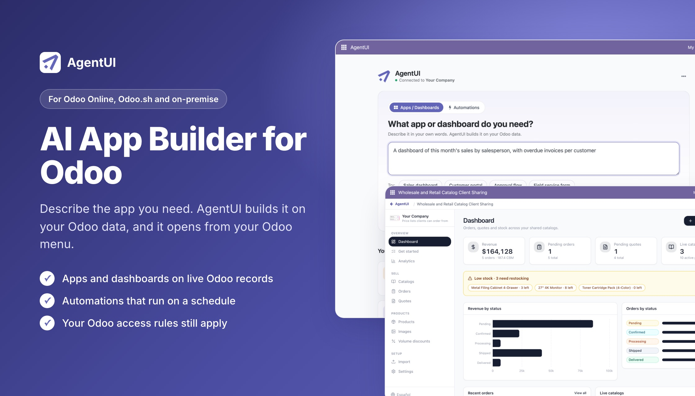
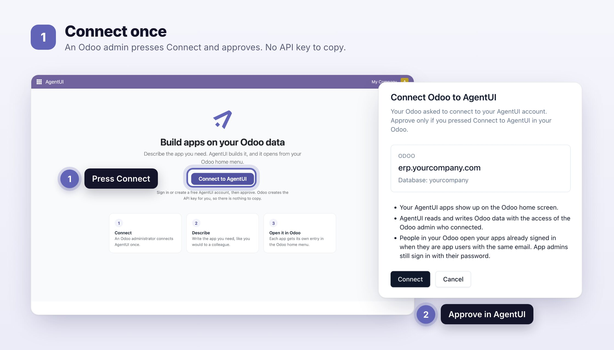
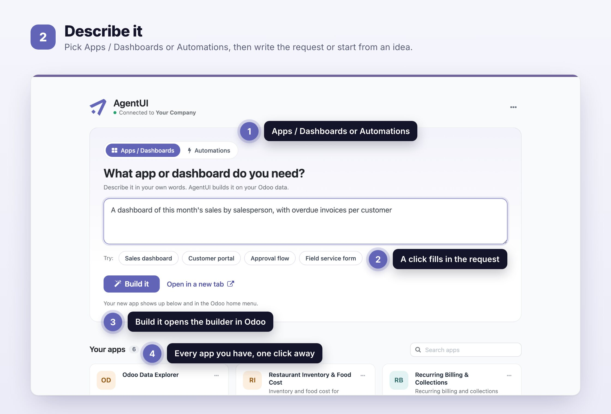
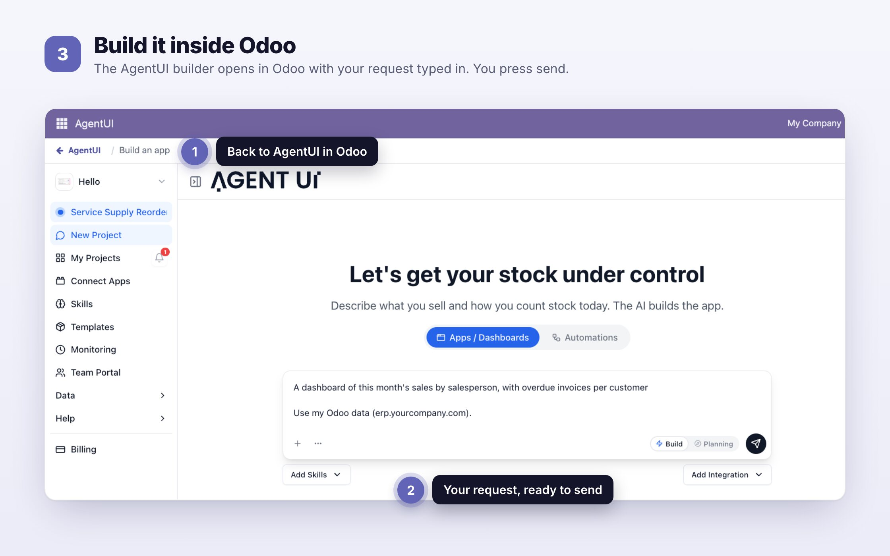
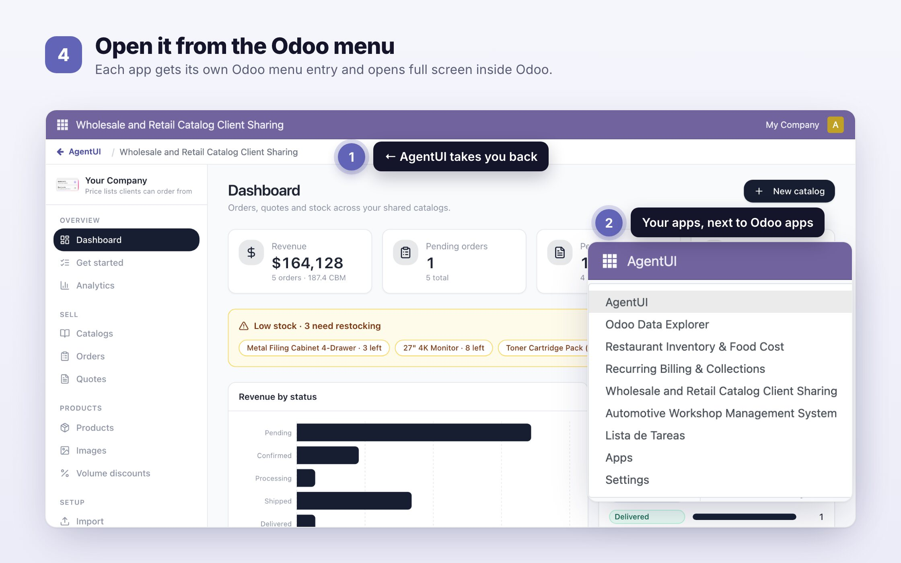
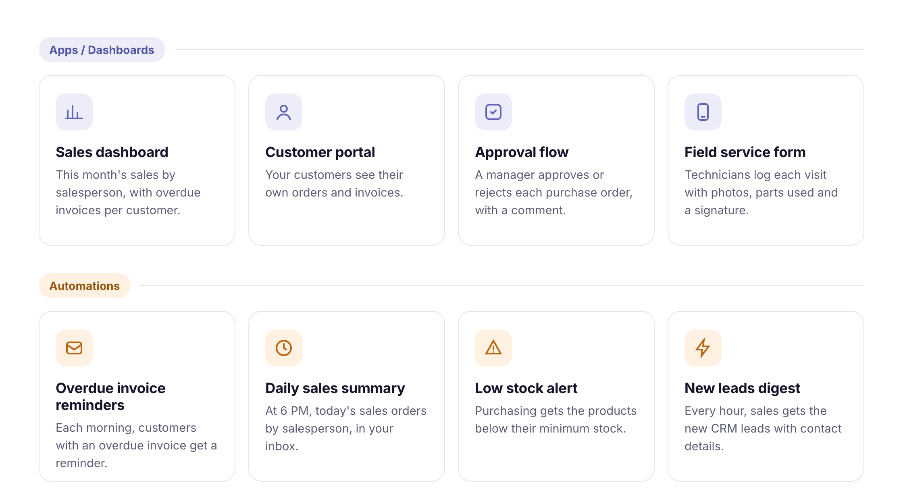
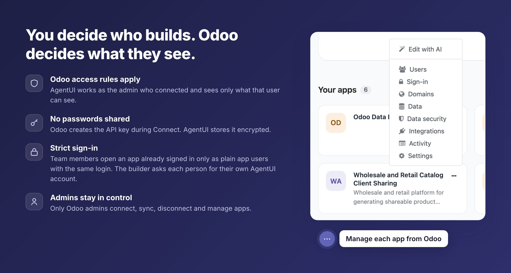
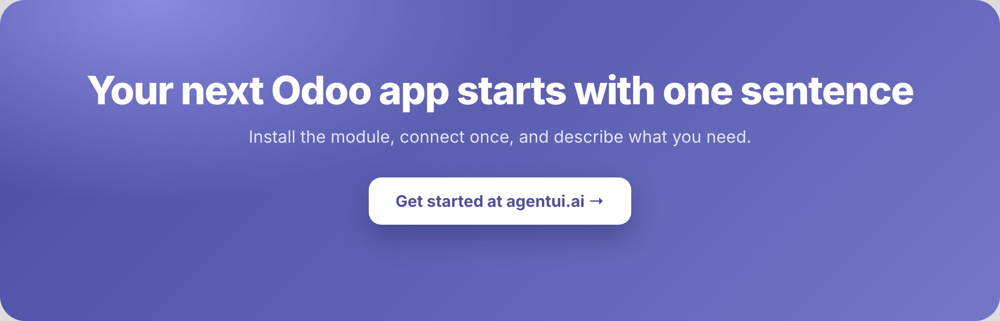

Describe the app, dashboard or automation you need. AgentUI builds it on your Odoo data, and each app opens from your Odoo menu. No code.
Odoo 18 and 20 · Odoo Online (Custom plan), Odoo.sh and on-premise · Free AgentUI account to start
Four steps, all inside Odoo.




Custom apps and dashboards on your Odoo data, and automations that run on a schedule.


AgentUI uses the standard Odoo external API (XML-RPC) over HTTPS.
Yes. This module has no Python, so Odoo Online accepts it: install it from Apps. Odoo Online lets other apps connect to your data only on its Custom plan. If you sign in to Odoo with Google or Odoo.com, the password Odoo asks for at Connect is your odoo.com account password.
Both. The module needs only Odoo's base and web modules, on Odoo 18 and 20.
Yes, over HTTPS. AgentUI calls your Odoo's external API, so an Odoo that only runs on a private network can't connect.
The module is free. You need an AgentUI account, and you can start with a free one. Plans are on agentui.ai.
Yes. Switch the toggle to Automations and describe the task, for example a reminder email for each overdue invoice every morning. It runs in AgentUI on a schedule, and you can see each run there.
At Connect: your Odoo address, database name, the administrator's login and the API key Odoo created. After that, your apps read and write only the records they use, through Odoo's API and its access rules. When someone opens an app, the module leaves a one-time sign-in record in Odoo; AgentUI reads it back to know who they are and signs them in.
Every internal Odoo user sees the apps in the home menu. Inside each app, AgentUI's own users and roles decide what they can do.
Yes, if you are an Odoo admin. Press ⋯ on the app and choose Users. The same menu opens the app's sign-in, domains, data and settings, inside Odoo.
Open the AgentUI menu, press ⋯ and choose Disconnect. Odoo removes the apps from its menu and AgentUI revokes the module's access. Your apps in AgentUI keep their Odoo connection; to cut it too, remove the Odoo integration in AgentUI or delete the "AgentUI" API key in Odoo (Preferences › Account Security).
The apps leave the Odoo menu. Press Disconnect first so AgentUI also revokes the module's access. Nothing is deleted in AgentUI, and the Odoo API key stays until you delete it.

Create your free AgentUI account at agentui.ai
Dashboards, portales de clientes, aprobaciones, formularios de campo y automatizaciones conectados a Odoo. Describe la app que necesitas y AgentUI la construye sobre tus clientes, pedidos de venta, facturas, productos e inventario. Sin programar.
Para Odoo 18 y 20: Odoo Online (plan Custom), Odoo.sh y on-premise. Cada app aparece en el menú principal de Odoo y se abre dentro de Odoo.